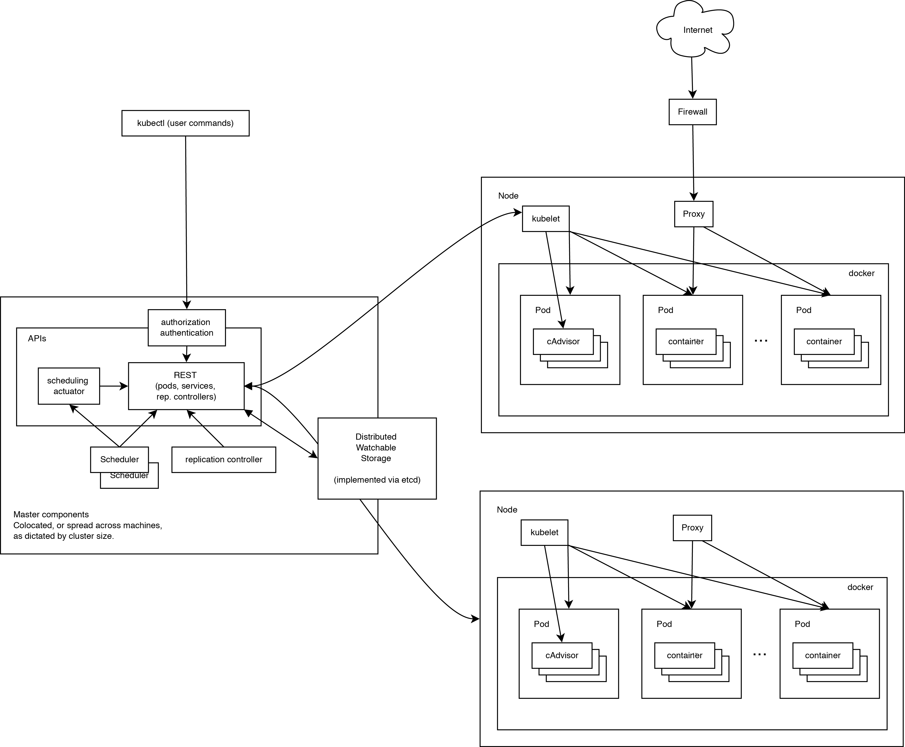

# 基本架构
任何优秀的项目都离不开优秀的架构设计。本小节将介绍 Kubernetes 在架构方面的设计考虑。
# 基本考虑
如果让我们自己从头设计一套容器管理平台，有如下几个方面是很容易想到的：
- 分布式架构，保证扩展性；
- 逻辑集中式的控制平面 + 物理分布式的运行平面；
- 一套资源调度系统，管理哪个容器该分配到哪个节点上；
- 一套对容器内服务进行抽象和 HA 的系统。
# 运行原理
下面这张图完整展示了 Kubernetes 的运行原理。

可见，Kubernetes 首先是一套分布式系统，由多个节点组成，节点分为两类：一类是属于管理平面的主节点/控制节点（Master Node）；一类是属于运行平面的工作节点（Worker Node）。
显然，复杂的工作肯定都交给控制节点去做了，工作节点负责提供稳定的操作接口和能力抽象即可。
从这张图上，我们没有能发现 Kubernetes 中对于控制平面的分布式实现，但是由于数据后端自身就是一套分布式的数据库 Etcd，因此可以很容易扩展到分布式实现。
# 控制平面
# 主节点服务
主节点上需要提供如下的管理服务：
apiserver是整个系统的对外接口，提供一套 RESTful 的 Kubernetes API，供客户端和其它组件调用；scheduler负责对资源进行调度，分配某个 pod 到某个节点上。是 pluggable 的，意味着很容易选择其它实现方式；controller-manager负责管理控制器，包括 endpoint-controller（刷新服务和 pod 的关联信息）和 replication-controller（维护某个 pod 的复制为配置的数值）。
# Etcd
这里 Etcd 即作为数据后端，又作为消息中间件。
通过 Etcd 来存储所有的主节点上的状态信息，很容易实现主节点的分布式扩展。
组件可以自动的去侦测 Etcd 中的数值变化来获得通知，并且获得更新后的数据来执行相应的操作。
# 工作节点
- kubelet 是工作节点执行操作的 agent，负责具体的容器生命周期管理，根据从数据库中获取的信息来管理容器，并上报 pod 运行状态等；
- kube-proxy 是一个简单的网络访问代理，同时也是一个 Load Balancer。它负责将访问到某个服务的请求具体分配给工作节点上的 Pod（同一类标签）。

← 基本概念 部署 Kubernetes →